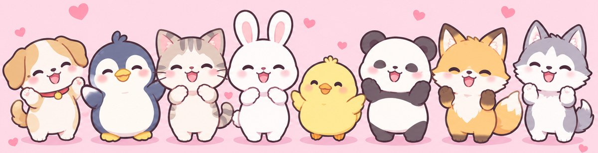
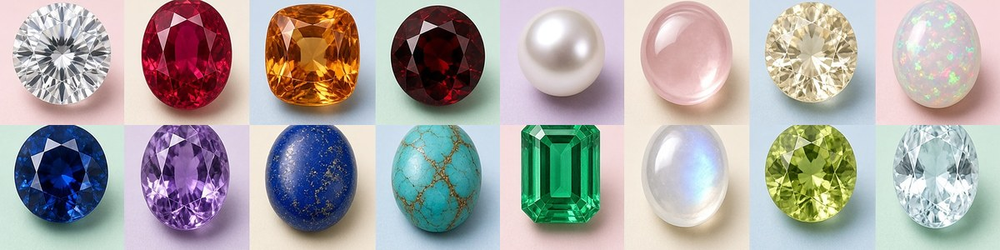

🐶 恋愛どうぶつ診断
公開中好きになったときのあなたは、どんな動物？ 12の質問で、恋愛での距離感・表現・ペースからタイプを判定します。
診断する →
💎 本当の性格 宝石診断
公開中あなたは何の宝石？ 20の質問で、人との関わり方・考え方・進め方・心の温度の4つの軸から本当の性格を判定します。
診断する →🔮
次の診断
準備中新しい診断を準備しています。公開したらここに追加されます。
無料で遊べる診断コンテンツの一覧です。結果は画像つきでそのままXにシェアできます。

好きになったときのあなたは、どんな動物？ 12の質問で、恋愛での距離感・表現・ペースからタイプを判定します。
診断する →
あなたは何の宝石？ 20の質問で、人との関わり方・考え方・進め方・心の温度の4つの軸から本当の性格を判定します。
診断する →新しい診断を準備しています。公開したらここに追加されます。